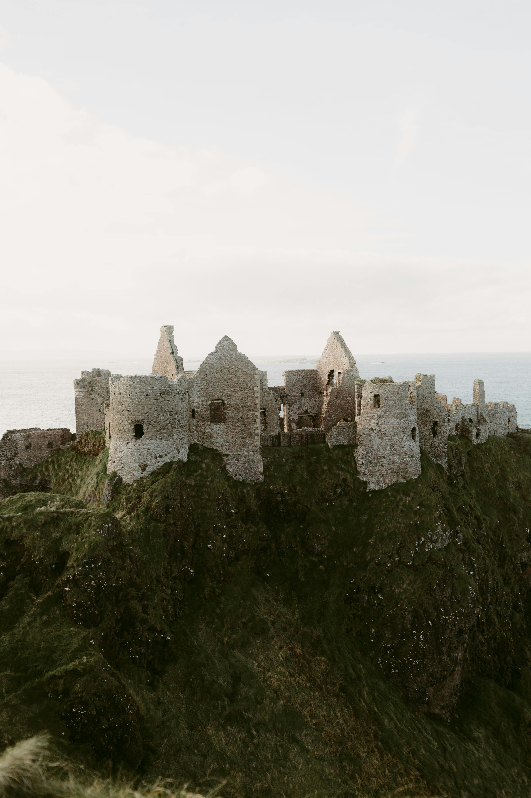

History of Dublin, Ireland
On the east coast in the province of Leinster, Dublin sits at the Irish Sea. Acting as the center of the country's commercial power, this port city also acts as the center of culture for Ireland. Writers, poets, and scholars seek the city for its inspiring nature and bountiful craic - a term unique to Ireland to describe the population's sense of humor and general disposition
This city full of Irish charm was not established easily, however. Dublin has long been the center of conflict, from Norse and Irish battles, to civil wars and rebellions against England. Below you will find a table detailing a brief history of the Irish Civil War.

| Event | Date | Meaning |
|---|---|---|
| Anglo-Irish Treaty | January 1922 | Irish War of Independence ends; Irish Free State established within British Empire |
| Civil War Ignites | June 28, 1922 | Provisional Government opens fire on political resistance members, sparking insurgences throughout the state |
| Seaborn Invasions in Dublin | July 1922 | National Army holds Dublin, attacks republican dissenters through sea invasions on the coasts |
| Civil War Ends | May 24, 1923 | After 1,600 to 2,000 casualties, the Irish Civil War is called to end, although violence against the state continued. |